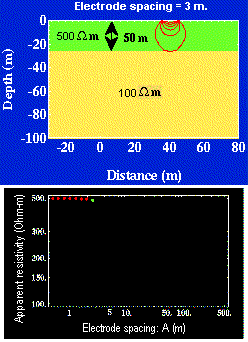

| Therefore, data must be plotted as a function of electrode spacing rather than as a function of location. The resulting plot is called a sounding curve, and it arises as shown in this interactive figure (Figure 8). Only current electrodes are shown. Potentials would be measured inside current electrodes using either the Wenner or Schulmberger configurations. Figure 8. |
 |